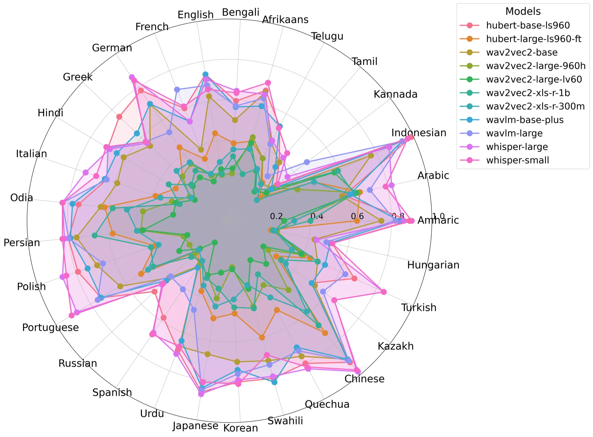
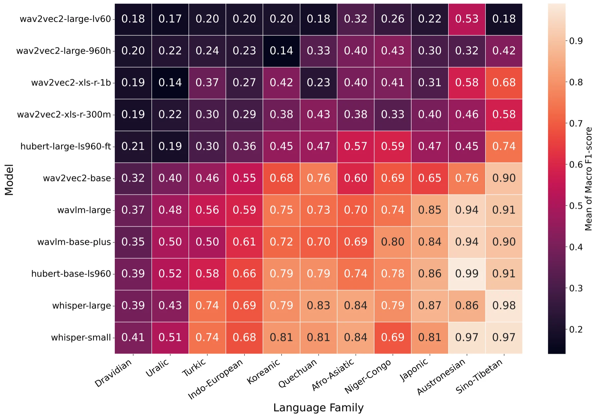
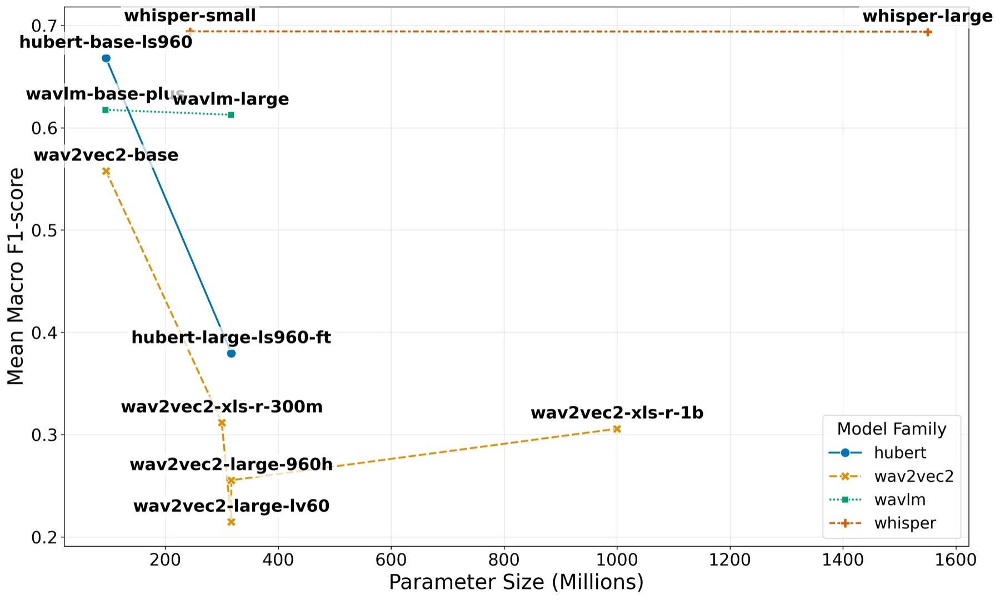

Interspeech 2026 · Sydney, Australia · pp. 4673-4678
KuralHub: Exposing Typological Capability Frontiers in Multilingual Speech Emotion Recognition
Department of Computer Science and Engineering, University of Moratuwa, Colombo, Sri Lanka
*Equal contribution
- 70languages surveyed
- 90datasets documented
- 29languages benchmarked
- 33datasets
- 11models
- 363training runs
Contents
Abstract
Speech Emotion Recognition (SER) advancements are constrained by high-resource bias, limiting global access. To address this, we introduce KuralHub, an open-science initiative democratizing SER for under-resourced languages. We evaluate 11 self-supervised models (WavLM, HuBERT, Wav2vec 2.0, Whisper) across 33 datasets in 29 diverse languages. Beyond standard benchmarking, our study reveals a critical typological bias: cross-lingual transferability is dictated more by structural linguistic properties than pre-training data volume. While models easily adapt to Mandarin or Amharic, they systematically fail on the Dravidian family. Crucially, we demonstrate that simply scaling model parameters fails to resolve this bottleneck. By exposing these linguistic capability frontiers, KuralHub provides a vital roadmap for developing equitable, typologically-aware speech technologies for all speakers.
Index terms: speech emotion recognition, under-resourced languages, benchmarking
Key findings
- No model is best everywhere. Whisper had the highest mean F1 (0.70 for both whisper-small and whisper-large), followed by HuBERT-base (0.68) and WavLM (0.64 large, 0.63 base-plus). Even so, HuBERT came out on top for nine languages and WavLM for English and Swahili (Table 2).
- Dravidian languages fail across the board. Kannada averaged 0.275 test accuracy and Tamil 0.306 (best single run 0.44). Telugu never got above 0.53. The spread between models is small, so they fail in the same way.
- More pre-training data does not guarantee better results. Mandarin (0.755) and Indonesian (0.720) were easy. French (0.421), Spanish (0.365) and Russian (0.344) were not, and Persian, Arabic, Odia, Amharic and Quechua all beat several European languages.
- Bigger models are not better. The log of parameter count is negatively correlated with F1 (r = −0.18, p = 0.0007). wav2vec2-base (0.58) beat both wav2vec2-large-960h (0.30) and wav2vec2-large-lv60 (0.25).
- Fear is the hardest emotion. Its mean F1 was 0.38, against 0.54 for anger and 0.52 for neutral. The order holds across languages.
1Introduction
Speech emotion recognition (SER) means working out from a voice alone whether the speaker sounds angry, happy, sad, afraid or neutral. Voice assistants, call-centre analytics and health monitoring all depend on it. Most SER research, though, covers a handful of high-resource languages, and the world has more than 7,000.
Emotional speech datasets for other languages are scattered across papers, Kaggle pages and lab websites, and each is described differently, so just finding them is slow. It is also unclear how well self-supervised speech models such as HuBERT, wav2vec 2.0, WavLM and Whisper carry over to emotion recognition in languages they saw little of during pre-training.
New to the field? The speech emotion recognition guide explains how emotion detection models work, which datasets and models to use, and how to evaluate them.
KuralHub (kural, குரல், is Tamil for "voice") addresses both problems. We looked for emotional speech datasets in the 70 most widely spoken languages and documented every one we found in the same format. We then trained emotion classifiers on top of 11 frozen pretrained models for 33 of those datasets, covering 29 languages, with a single recipe, and studied where they work and where they break.
2The dataset survey
We took the 70 most widely spoken languages listed in Ethnologue and searched academic repositories and public sources for emotional speech corpora in each. 45 of the 70 have at least one dataset. For the remaining 25 we found none. The catalog documents 90 datasets in total.
The repository is organised by language. Each language has a folder whose Readme.md gives the language family, ISO code, where it is spoken and a table of its datasets. Every dataset then gets its own Markdown file with the emotion labels, size, speakers, recording setup (acted, elicited or spontaneous), licence, how to get it, the original paper and a BibTeX entry. This website builds one page per language from those files.
datasets/
├── Tamil/
│ ├── Readme.md # language info + table of datasets
│ ├── EmoTa.md # one file per dataset
│ ├── TaMaR-EmoDB.md
│ └── Ram_C_Sunitha_et_al.md
├── Sinhala/
│ └── Readme.md # no dataset found (yet)
└── … 70 language foldersWhich datasets were benchmarked
A dataset was included in the benchmark if it (i) had clearly annotated emotion labels, (ii) covered at least three of five target emotions (anger, happiness, sadness, neutral and fear), and (iii) had at least 50 utterances per emotion. 33 datasets in 29 languages qualified. They differ in recording conditions, in how emotion was elicited (acted or spontaneous), in speaker demographics and in their emotion labels, which makes them a fair test of how well a model generalises.
| Language | Dataset | #Emo | #Samples |
|---|---|---|---|
| Afrikaans | AfrikaansSE | 8 | 800 |
| Amharic | ASED | 5 | 2,474 |
| Arabic | ANAD | 3 | 1,384 |
| Bengali | BANSpEmo | 6 | 792 |
| Bengali | SUBESCO | 7 | 7,000 |
| Chinese* | ESD | 5 | 17,500 |
| English* | IESC | 5 | 600 |
| English* | RAVDESS | 7 | 1,440 |
| French* | CaFE | 7 | 936 |
| German* | EmoDB | 7 | 535 |
| Greek | AESDD | 5 | 500 |
| Hindi* | IITKGP-SEHSC | 8 | 12,000 |
| Hungarian | HESD | 8 | 760 |
| Indonesian | IndoWaveSentiment | 5 | 300 |
| Italian* | EMOVO | 7 | 564 |
| Italian* | Emozionalmente | 7 | 6,902 |
| Japanese* | JVNV | 6 | 1,615 |
| Kannada | Agrawal et al. | 6 | 468 |
| Kazakh | KazEmoTTS | 6 | 54,760 |
| Korean* | KESDy18 | 7 | 2,880 |
| Odia | SITB-OSED | 6 | 12,110 |
| Persian | ShEMO | 6 | 3,000 |
| Polish | nEMO | 6 | 4,481 |
| Portuguese* | emoUERJ | 4 | 377 |
| Quechua | Quechua Collao | 9 | 12,420 |
| Russian* | Dusha | 4 | 300,000 |
| Spanish* | MESD | 6 | 432 |
| Swahili | Kenyan Swahili SER | 5 | 300 |
| Tamil | EmoTa | 5 | 936 |
| Telugu | Sowmith et al. | 5 | 468 |
| Turkish | TurEV-DB | 4 | 1,735 |
| Urdu | URDU-Dataset | 4 | 400 |
| Urdu | UrduSER | 7 | 3,500 |
3Benchmark setup
Models
We used 11 pretrained speech encoders from four families: HuBERT (hubert-base-ls960, hubert-large-ls960-ft), wav2vec 2.0 (wav2vec2-base, wav2vec2-large-960h, wav2vec2-large-lv60, wav2vec2-xls-r-300m, wav2vec2-xls-r-1b), WavLM (wavlm-base-plus, wavlm-large) and Whisper (whisper-small, whisper-large).
Training and evaluation
Every backbone stays frozen. Only a small classification head on top is trained, which keeps the comparison cheap and fair and needs far less labelled data than full fine-tuning.
- Audio is resampled to 16 kHz, normalised with librosa and passed through the frozen backbone.
- The last-layer hidden states are averaged over time, giving one embedding per clip.
- A two-layer feed-forward head maps the embedding to emotion classes: linear (to 512 units), GELU, dropout (0.3), linear.
- The head is trained with cross-entropy loss and Adam (learning rate 10−3, halved when validation loss stalls for 2 epochs) for up to 30 epochs, with early stopping after 5 epochs without improvement.
Each dataset is split 70% / 15% / 15% into training, validation and test sets. Runs use whichever of the five target emotions a dataset contains. We report precision, recall, F1 and accuracy on the held-out test set, per emotion and as macro and weighted averages. The hidden size, dropout, learning rate schedule, patience and pooling come from the released code rather than the paper.
4Results
4.1The language matters more than how much pre-training data it had
Mean test accuracy over all models and languages was 0.52 (σ = 0.19). A common assumption is that languages with more pre-training data will do better. The results only partly support that.
Mandarin Chinese, a high-resource language, was easy (mean 0.755, median 0.90), and so was Indonesian (0.720, median 0.77). Other high-resource languages were not. French (0.421), Spanish (0.365) and Russian (0.344) were all mediocre. Several lower-resource languages did well instead: Persian (0.67, median 0.76) and Arabic (0.66, σ = 0.08) were stable, and Odia (0.643, best 0.83), Amharic (0.636, best 0.90) and Quechua all beat several European languages.
Pre-training volume alone does not decide the outcome. Languages with stable phonetics, consistent pronunciation rules and standardised corpora seem easier for self-supervised models to learn. High dialect variation and spontaneous speech add acoustic noise that pulls performance down.


| Language | Family | Datasets | Mean | SD | Median | Best | Best run |
|---|---|---|---|---|---|---|---|
| Chinese | Sino-Tibetan | 1 | 0.755 | 0.233 | 0.90 | 0.98 | whisper-large |
| Indonesian | Austronesian | 1 | 0.721 | 0.235 | 0.77 | 0.99 | hubert-base-ls960 |
| Persian | Indo-European | 1 | 0.671 | 0.163 | 0.76 | 0.83 | whisper-small |
| Arabic | Afro-Asiatic | 1 | 0.661 | 0.081 | 0.64 | 0.82 | whisper-large |
| Odia | Indo-European | 1 | 0.644 | 0.183 | 0.64 | 0.83 | wavlm-large |
| Amharic | Afro-Asiatic | 1 | 0.636 | 0.257 | 0.75 | 0.90 | whisper-small |
| Japanese | Japonic | 1 | 0.619 | 0.240 | 0.67 | 0.87 | whisper-large |
| Swahili | Niger-Congo | 1 | 0.615 | 0.190 | 0.69 | 0.83 | wavlm-base-plus |
| Portuguese | Indo-European | 1 | 0.600 | 0.229 | 0.63 | 0.91 | whisper-small |
| Quechua | Quechuan | 1 | 0.587 | 0.229 | 0.71 | 0.83 | whisper-large |
| Korean | Koreanic | 1 | 0.577 | 0.230 | 0.70 | 0.81 | whisper-small |
| Polish | Indo-European | 1 | 0.566 | 0.244 | 0.66 | 0.87 | whisper-large |
| German | Indo-European | 1 | 0.555 | 0.228 | 0.53 | 0.86 | whisper-large |
| Turkish | Turkic | 1 | 0.549 | 0.175 | 0.48 | 0.84 | whisper-small |
| Afrikaans | Indo-European | 1 | 0.524 | 0.157 | 0.59 | 0.71 | whisper-small |
| English | Indo-European | 2 | 0.510 | 0.223 | 0.57 | 0.82 | hubert-base-ls960 |
| Italian | Indo-European | 2 | 0.504 | 0.194 | 0.56 | 0.80 | whisper-large |
| Urdu | Indo-European | 2 | 0.496 | 0.208 | 0.46 | 0.88 | wav2vec2-base |
| Hindi | Indo-European | 1 | 0.488 | 0.222 | 0.61 | 0.71 | whisper-small |
| Greek | Indo-European | 1 | 0.466 | 0.169 | 0.54 | 0.75 | hubert-base-ls960 |
| Bengali | Indo-European | 2 | 0.460 | 0.228 | 0.39 | 0.89 | whisper-large |
| Kazakh | Turkic | 1 | 0.440 | 0.162 | 0.51 | 0.65 | whisper-small |
| French | Indo-European | 1 | 0.421 | 0.178 | 0.38 | 0.70 | wavlm-large |
| Telugu | Dravidian | 1 | 0.405 | 0.098 | 0.43 | 0.53 | hubert-base-ls960 |
| Hungarian | Uralic | 1 | 0.367 | 0.138 | 0.43 | 0.52 | hubert-base-ls960 |
| Spanish | Indo-European | 1 | 0.365 | 0.191 | 0.27 | 0.68 | whisper-small |
| Russian | Indo-European | 1 | 0.345 | 0.118 | 0.40 | 0.51 | hubert-base-ls960 |
| Tamil | Dravidian | 1 | 0.306 | 0.089 | 0.29 | 0.44 | whisper-small |
| Kannada | Dravidian | 1 | 0.275 | 0.086 | 0.26 | 0.48 | wavlm-large |
4.2Systematic failure on Dravidian languages
The clearest pattern is that every model does badly on the Dravidian languages. Kannada (μ = 0.275, σ = 0.085, median 0.26) and Tamil (μ = 0.306, σ = 0.088, max 0.44) are among the worst languages in the benchmark, and Telugu peaks at 0.53.
The small standard deviations matter. Almost every model fails on Kannada and Tamil in much the same way, which points to a limitation in current self-supervised architectures rather than an unlucky choice of model. Dravidian languages are morphologically complex, highly agglutinative and rich in retroflex consonants. Handling that takes fine-grained temporal modelling, and the strided CNN front-ends these models use may throw away the phonetic detail needed.


The shape of each language's score distribution sorts languages into two groups:
- Widely solved (negative skew). Mandarin (skew −0.87) and Amharic (−0.39). Most models do well, so the language is easy to reach.
- Capability frontier (positive skew). Kannada (+1.17) and Spanish (+0.72). Median scores sit near the bottom (Kannada 0.26, Spanish 0.27), and only a few larger or specialised models do better.
| Best model | Languages |
|---|---|
| HuBERT | French, Greek, Hindi, Hungarian, Indonesian, Japanese, Russian, Telugu, Urdu |
| WavLM | English, Swahili |
| Whisper | Afrikaans, Amharic, Arabic, Bengali, Chinese, German, Italian, Kannada, Kazakh, Korean, Odia, Persian, Polish, Portuguese, Quechua, Spanish, Tamil, Turkish |
No single model is best for every language, so model choice for multilingual SER has to depend on the language.
4.3Architecture matters, size does not
Across all 33 datasets, the Whisper models had the highest mean F1 (0.70 for both whisper-small and whisper-large), followed by HuBERT-base (0.68) and WavLM (0.64 for wavlm-large, 0.63 for wavlm-base-plus). Whisper and HuBERT held up well across languages, while the wav2vec 2.0 models generalised worst.
To separate architecture from dataset and language effects we fitted a linear mixed-effects model, F1 ~ Family + (1|Dataset) + (1|Language). The reference family had a mean F1 of 0.524. Against it, wav2vec 2.0 was clearly worse (β = −0.195, p < .001) while WavLM (β = +0.091) and Whisper (β = +0.170) were better (both p < .001). About 40% of the total variance came from differences between datasets and languages.
Bigger models within a family were not reliably better. wav2vec2-base (μ = 0.58, σ = 0.17) beat wav2vec2-large-960h (μ = 0.30, σ = 0.11) and wav2vec2-large-lv60 (μ = 0.25, σ = 0.10). Across all models:
- Raw parameter count had no significant linear relationship with F1 (r = 0.035, 95% CI [−0.068, 0.138], p = 0.50).
- Log parameter count was significantly negatively correlated with F1 (r = −0.177, 95% CI [−0.275, −0.075], p = 0.0007). Spearman's ρ = −0.344 (p = 1.6 × 10−11) agrees.
- A second mixed-effects model, F1 ~ log(ModelSize) + (1|Dataset) + (1|Language), gave β = −0.048 (SE = 0.0125, p = 0.000125). Multiplying the parameter count by e (about 2.7×) lowered F1 by roughly 4.8 points.
Dataset-level variance (0.0113) dominated language-level variance (≈ 0), largely because 25 of the 29 languages had only one dataset. Adding parameters does not, by itself, improve multilingual emotion recognition.


| Family | Checkpoint | Params | Accuracy | Macro-F1 | Weighted-F1 |
|---|---|---|---|---|---|
| HuBERT | hubert-base-ls960 | ~95M | 0.68 | 0.67 | 0.68 |
| HuBERT | hubert-large-ls960-ft | ~316M | 0.42 | 0.38 | 0.39 |
| wav2vec 2.0 | wav2vec2-base | ~95M | 0.59 | 0.56 | 0.57 |
| wav2vec 2.0 | wav2vec2-large-960h | ~317M | 0.32 | 0.26 | 0.26 |
| wav2vec 2.0 | wav2vec2-large-lv60 | ~317M | 0.29 | 0.21 | 0.23 |
| wav2vec 2.0 | wav2vec2-xls-r-300m | ~300M | 0.35 | 0.31 | 0.32 |
| wav2vec 2.0 | wav2vec2-xls-r-1b | ~1,000M | 0.36 | 0.31 | 0.32 |
| WavLM | wavlm-base-plus | ~95M | 0.64 | 0.62 | 0.63 |
| WavLM | wavlm-large | ~316M | 0.64 | 0.61 | 0.62 |
| Whisper | whisper-small | ~244M | 0.71 | 0.69 | 0.71 |
| Whisper | whisper-large | ~1,550M | 0.71 | 0.69 | 0.71 |
4.4Which emotions are hard
| Emotion | Precision | Recall | F1 |
|---|---|---|---|
| Anger | 0.57 | 0.57 | 0.54 |
| Fear | 0.47 | 0.37 | 0.38 |
| Happiness | 0.52 | 0.43 | 0.44 |
| Neutral | 0.46 | 0.65 | 0.52 |
| Sadness | 0.54 | 0.48 | 0.46 |
Neutral and anger were the easiest to recognise and fear the hardest. The same order shows up across languages, which fits cross-cultural studies of emotion perception and suggests some acoustic cues are shared.
Errors came mainly from three sources: low-resource languages with little pre-training data, spontaneous rather than acted speech, and emotional expressions that are not prototypical. For example, the acted Amharic ASED dataset scored 24% higher than spontaneous-speech datasets with similar resources.
5Limitations and future work
Across 11 models and 29 languages, the structure of a language limited cross-lingual transfer in SER more than the amount of pre-training data or the number of model parameters did. Some families, Dravidian in particular, sit at a "capability frontier" where current models fail systematically.
The study has limits:
- To keep evaluation cheap and comparable we used frozen last-layer features. Paralinguistic cues that live in intermediate layers may be under-represented.
- Dataset conditions, such as acted versus spontaneous speech, account for about 40% of the variance in performance, which complicates clean comparisons between languages.
- 25 of the 29 languages are represented by a single dataset.
Better multilingual SER will need more than larger models. We hope KuralHub helps others work on typology-aware pre-training and layer-wise fine-tuning.
6Using KuralHub
Find a dataset
The dataset catalog has a searchable table of all 90 datasets and one page per language, for example Tamil, Hindi or Swahili. The same information lives as Markdown in the repository's datasets/ folder.
Get the numbers
The results page lists all 363 runs. The same data is available as files:
data/runs.csvanddata/runs.json: one row per run, with validation and test accuracy, macro and weighted F1, and F1 per emotion.data/datasets.json: every catalogued dataset with language, emotion labels, size, access, licence and links.data/languages.json: all 70 languages with family, ISO code and dataset count.- Per-run classification reports, confusion matrices and loss curves:
results/train_val_test_logs/.
Tables A and B above are computed from those 363 classification reports. The per-language figures match the paper. The per-model F1 figures differ from the paper's by a point or two, so the text quotes the paper's numbers as published.
Re-run an experiment
git clone https://github.com/aaivu/KuralHub.git
cd KuralHub
make setup # virtualenv + requirements (Python 3.12+)
make download_dataset # needs a Kaggle API key in ~/.kaggle/kaggle.json
make meta_extract # builds the per-dataset metadata CSVs
DATASET=EMOTA BASE_MODEL=WAVLM_LARGE make train_modelDATASET and BASE_MODEL take the names defined in src/utils/constant.py. Batch size, learning rate, epochs and early-stopping patience can be set with BATCH_SIZE, LEARNING_RATE, EPOCHS and EARLY_STOPPING_PATIENCE.
For AI assistants and agents
Plain-text versions of this site follow the llms.txt convention. llms.txt is a short index with the key facts and links. llms-full.txt holds the paper summary, every result table and every dataset entry in one file. This page is also available as Markdown.
Contribute a dataset or a model
KuralHub grows with outside help. 25 of the 70 surveyed languages still have no emotional speech dataset we could find, and the benchmark so far covers 11 models. If you have built a corpus, know of one we missed, or want to see another model in the results, we would like to hear from you.
Any language counts, including ones that already have datasets listed. Send a link through the form, or write the entry yourself from the template and open a pull request.
Know a speech encoder that might handle emotion better, especially for Dravidian or other low-scoring languages? Tell us which checkpoint to try, or run it yourself with the same recipe and send the logs.
Spotted a mistake in a dataset entry? Every dataset section has a "Suggest an edit" link. Contributions are reviewed and credited in the repository history. CONTRIBUTING.md has the details.
Frequently asked questions
What is KuralHub?
KuralHub is an open catalog of speech emotion recognition (SER) datasets for the 70 most widely spoken languages, together with a benchmark of 11 pretrained speech models on 33 datasets in 29 languages. It was published at Interspeech 2026.
Where can I find a speech emotion recognition dataset for my language?
Open the dataset catalog and pick your language. Each language page lists every dataset we found, with emotion labels, size, licence, download or request link and a BibTeX entry. 45 of the 70 surveyed languages have at least one dataset.
Which pretrained model works best for speech emotion recognition?
On average, Whisper. In the KuralHub benchmark whisper-small and whisper-large both reached a mean F1 of 0.70, ahead of HuBERT-base (0.68) and WavLM (0.63 to 0.64). But no model is best everywhere: HuBERT came out on top for nine languages and WavLM for English and Swahili, so check the per-language results.
Do larger speech models recognise emotions better?
Not in this benchmark. With frozen features, the log of model size was negatively correlated with F1 (r = −0.18, p = 0.0007), and wav2vec2-base (mean 0.58) beat wav2vec2-large-960h (0.30) and wav2vec2-large-lv60 (0.25).
Why do models struggle with Tamil, Telugu and Kannada?
All three Dravidian languages were among the worst performers: Kannada averaged 0.275 accuracy and Tamil 0.306, with little spread between models. The paper suggests the cause is structural. These languages are agglutinative and have many retroflex consonants, which need fine-grained temporal modelling that strided CNN front-ends may lose.
Which emotions are hardest to recognise from speech?
Fear. Averaged over all runs, fear had an F1 of 0.38, against 0.54 for anger and 0.52 for neutral. The ordering held across languages.
Are the datasets free to use?
It depends on the dataset. Some can be downloaded directly. Others need a request or a signed agreement with the original authors, and a few are paid. Each entry states the access route and licence. Check the original licence before research or commercial use.
How do I cite KuralHub?
Use the BibTeX entry in the citation section below.
Citation
If you use KuralHub, the benchmark results or the catalog, please cite:
Thavarasa, L., Thevakumar, J., Sivatheepan, T., Thayasivam, U. (2026) KuralHub: Exposing Typological Capability Frontiers in Multilingual Speech Emotion Recognition. Proc. Interspeech 2026, 4673-4678, doi: 10.21437/Interspeech.2026-3502
@inproceedings{thavarasa26_interspeech,
title = {{KuralHub: Exposing Typological Capability Frontiers in Multilingual Speech Emotion Recognition}},
author = {Luxshan Thavarasa and Jubeerathan Thevakumar and Thanikan Sivatheepan and Uthayasanker Thayasivam},
year = {2026},
booktitle = {{Interspeech 2026}},
pages = {4673--4678},
doi = {10.21437/Interspeech.2026-3502},
issn = {2958-1796},
}If you use one of the catalogued datasets, please cite its original authors too. Each dataset entry includes their BibTeX.
Authors
- Jubeerathan Thevakumar*
- Thanikan Sivatheepan
- Uthayasanker Thayasivam
*Equal contribution. All authors are with the Department of Computer Science and Engineering, University of Moratuwa, Sri Lanka.
Acknowledgements
We thank Braveenan Sritharan for mentorship, and the creators of every dataset listed here for releasing their data openly or on request.